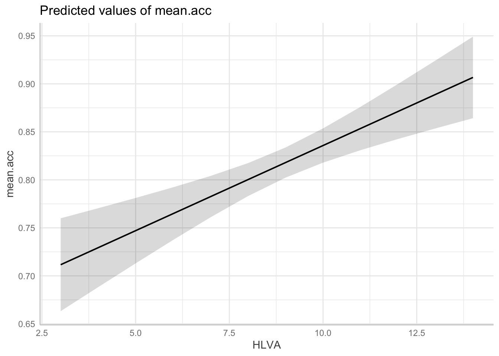
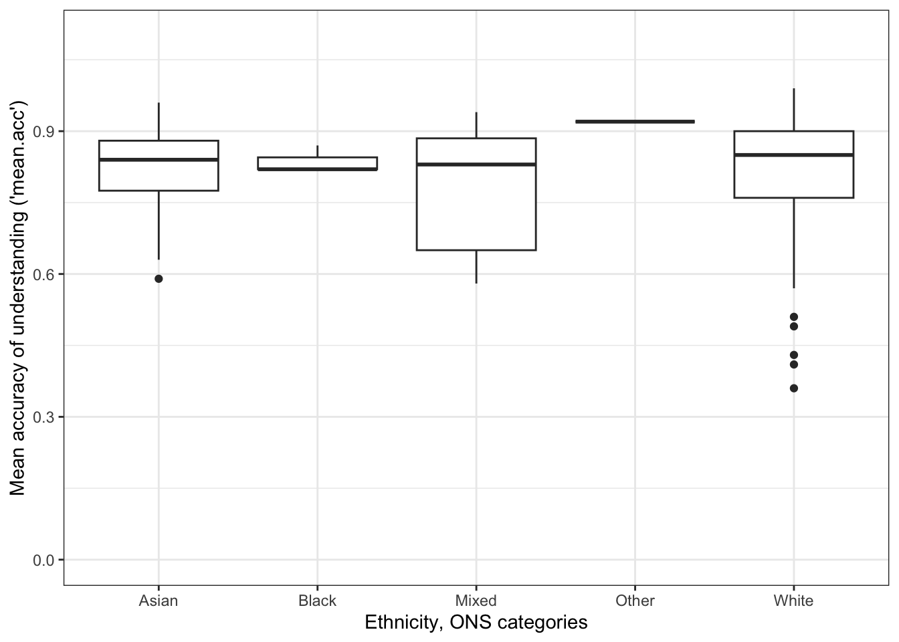
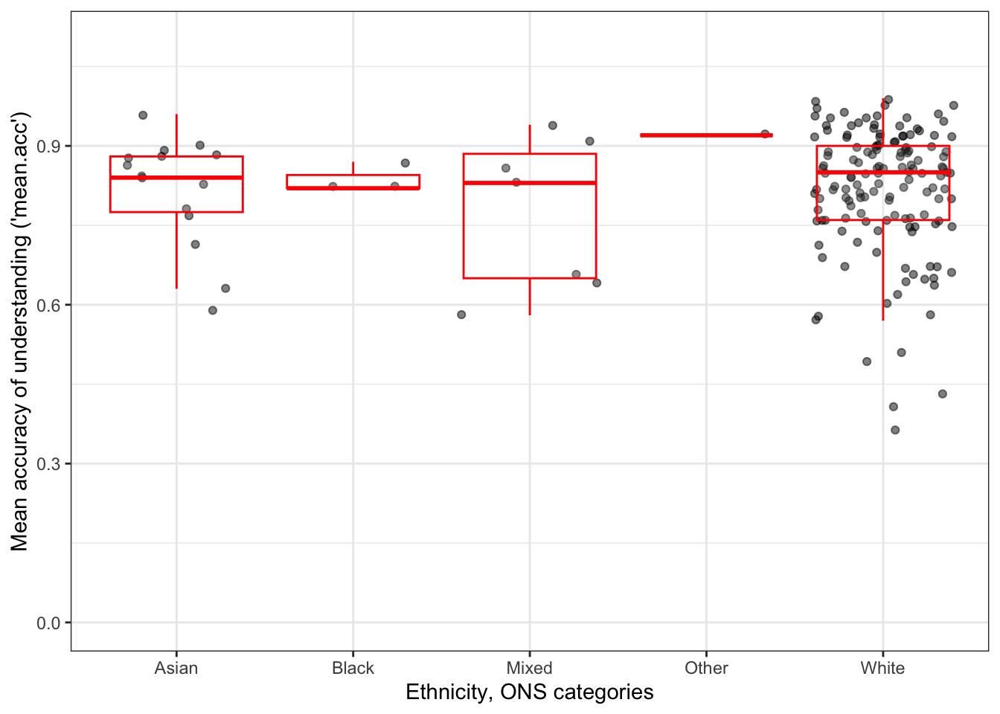
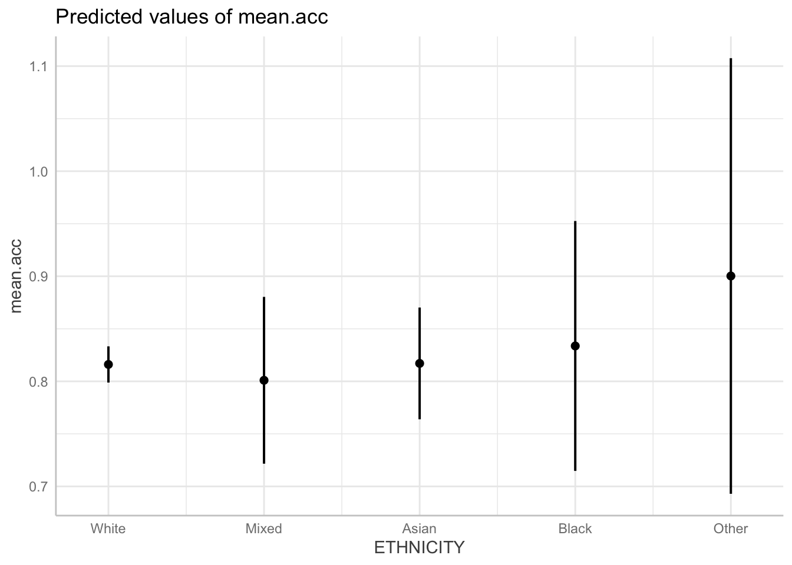

rm(list=ls()) 2023-24-PSYC122-w18-how-to
Introduction
In Week 18, we aim to further develop skills in working with the linear model.
We do this to learn how to answer research questions like:
- What person attributes predict success in understanding?
- Can people accurately evaluate whether they correctly understand written health information?
These kinds of research questions can be answered using methods like the linear model.
When we do these analyses, we need to think about how we report the results:
- we usually need to report information about the kind of model we specify;
- and we will need to report the nature of the association estimated in our model.
We usually need to decide:
- is the association significant?
- does the association reflect a positive or negative relationship between outcome and predictor?
- and is the association we see in our sample data relatively strong or weak?
We will consolidate and extend learning on data visualization:
- focusing on how we edit ggplot() code to produce professional looking plots.
Naming things
I will format dataset names like this:
study-one-general-participants.csv
I will also format variable (data column) names like this: variable
I will also format value or other data object (e.g. cell value) names like this: studyone
I will format functions and library names like this: e.g. function ggplot() or e.g. library {tidyverse}.
The data we will be using
In this how-to guide, we use data from a 2020 study of the response of adults from a UK national sample to written health information:
study-one-general-participants.csv
Answers
Step 1: Set-up
To begin, we set up our environment in R.
Task 1 – Run code to empty the R environment
Task 2 – Run code to load relevant libraries
library("ggeffects")Warning: package 'ggeffects' was built under R version 4.2.3library("tidyverse")── Attaching packages ─────────────────────────────────────── tidyverse 1.3.2 ──
✔ ggplot2 3.5.1 ✔ purrr 1.0.2
✔ tibble 3.2.1 ✔ dplyr 1.1.2
✔ tidyr 1.3.0 ✔ stringr 1.5.0
✔ readr 2.1.3 ✔ forcats 0.5.2Warning: package 'ggplot2' was built under R version 4.2.3── Conflicts ────────────────────────────────────────── tidyverse_conflicts() ──
✖ dplyr::filter() masks stats::filter()
✖ dplyr::lag() masks stats::lag()Step 2: Load the data
Task 3 – Read in the data file we will be using
The data file is called:
study-one-general-participants.csv
Use the read_csv() function to read the data file into R:
study.one.gen <- read_csv("study-one-general-participants.csv")Rows: 169 Columns: 12
── Column specification ────────────────────────────────────────────────────────
Delimiter: ","
chr (5): participant_ID, study, GENDER, EDUCATION, ETHNICITY
dbl (7): mean.acc, mean.self, AGE, SHIPLEY, HLVA, FACTOR3, QRITOTAL
ℹ Use `spec()` to retrieve the full column specification for this data.
ℹ Specify the column types or set `show_col_types = FALSE` to quiet this message.When you read the data file in, give the data object you create a distinct name e.g. study.one.gen.
Task 4 – Inspect the data file
Use the summary() or head() functions to take a look.
head(study.one.gen)# A tibble: 6 × 12
participant_ID mean.acc mean.self study AGE SHIPLEY HLVA FACTOR3 QRITOTAL
<chr> <dbl> <dbl> <chr> <dbl> <dbl> <dbl> <dbl> <dbl>
1 studyone.1 0.49 7.96 studyo… 34 33 7 53 11
2 studyone.10 0.85 7.28 studyo… 25 33 7 60 11
3 studyone.100 0.82 7.36 studyo… 43 40 8 46 12
4 studyone.101 0.94 7.88 studyo… 46 33 11 51 15
5 studyone.102 0.58 6.96 studyo… 18 32 3 51 12
6 studyone.103 0.84 7.88 studyo… 19 37 13 45 19
# ℹ 3 more variables: GENDER <chr>, EDUCATION <chr>, ETHNICITY <chr>summary(study.one.gen) participant_ID mean.acc mean.self study
Length:169 Min. :0.3600 Min. :3.440 Length:169
Class :character 1st Qu.:0.7600 1st Qu.:6.080 Class :character
Mode :character Median :0.8400 Median :7.080 Mode :character
Mean :0.8163 Mean :6.906
3rd Qu.:0.9000 3rd Qu.:7.920
Max. :0.9900 Max. :9.000
AGE SHIPLEY HLVA FACTOR3
Min. :18.00 Min. :23.00 Min. : 3.000 Min. :34.00
1st Qu.:24.00 1st Qu.:33.00 1st Qu.: 7.000 1st Qu.:46.00
Median :32.00 Median :35.00 Median : 9.000 Median :51.00
Mean :34.87 Mean :34.96 Mean : 8.905 Mean :50.33
3rd Qu.:42.00 3rd Qu.:38.00 3rd Qu.:10.000 3rd Qu.:55.00
Max. :76.00 Max. :40.00 Max. :14.000 Max. :63.00
QRITOTAL GENDER EDUCATION ETHNICITY
Min. : 6.00 Length:169 Length:169 Length:169
1st Qu.:12.00 Class :character Class :character Class :character
Median :13.00 Mode :character Mode :character Mode :character
Mean :13.36
3rd Qu.:15.00
Max. :19.00 Even though you have done this before, you will want to do it again, here, and pay particular attention to:
- summary information about the numeric variables;
- summary information about variables of class:
character.
Step 3: Use a linear model to to answer the research questions – one predictor
Revise: Practice to strengthen skills
We start by revising how to use lm() with one predictor.
One of our research questions is:
- What person attributes predict success in understanding?
Task 5 – Examine the relation between outcome mean accuracy (mean.acc) and health literacy (HLVA)
Hint: Task 5
We can use lm() to estimate whether variation in health literacy (HLVA) predicts outcome mean accuracy (mean.acc) of understanding.
model <- lm(mean.acc ~ HLVA, data = study.one.gen)
summary(model)
Call:
lm(formula = mean.acc ~ HLVA, data = study.one.gen)
Residuals:
Min 1Q Median 3Q Max
-0.40848 -0.05304 0.01880 0.07608 0.19968
Coefficients:
Estimate Std. Error t value Pr(>|t|)
(Intercept) 0.61399 0.03387 18.128 < 2e-16 ***
HLVA 0.02272 0.00369 6.158 5.31e-09 ***
---
Signif. codes: 0 '***' 0.001 '**' 0.01 '*' 0.05 '.' 0.1 ' ' 1
Residual standard error: 0.1068 on 167 degrees of freedom
Multiple R-squared: 0.1851, Adjusted R-squared: 0.1802
F-statistic: 37.92 on 1 and 167 DF, p-value: 5.307e-09In R analysis code, we write method(outcome ~ predictor) so:
lm(mean.acc ~ HLVA, data = study.one.gen)- gets us an analysis of whether or how
HLVApredicts variation in outcomemean.acc.
If you look at the model summary you can answer the following questions.
Questions: Task 5
Q.1. What is the estimate for the coefficient of the effect of the predictor,
HLVA?A.1. 0.02272
Q.2. Is the effect significant?
A.2. It is significant, p < .05
Q.3. What are the values for t and p for the significance test for the coefficient?
A.3. t = 6.158, p = 5.31e-09
Q.4. What do you conclude is the answer to the research question, given the linear model results?
A.4. The model slope estimate suggests that as HLVA scores increase so also do
mean.accscoresQ.5. What is the F-statistic for the regression? Report F, DF and the p-value.
A.5. F-statistic: 37.92 on 1 and 167 DF, p-value: 5.307e-09
Q.6. Is the regression significant?
A.6. Yes: the regression is significant.
Q.7. What is the Adjusted R-squared?
A.7. Adjusted R-squared: 0.1802
Q.8. Explain in words what this R-squared value indicates?
A.8. The R-squared suggests that 18% of outcome variance can be explained by the model
Step 4: Use a linear model to to answer the research questions – multiple predictors
Introduce: make some new moves
Task 6 – Examine the relation between outcome mean accuracy (mean.acc) and multiple predictors
Here, the predictors will include:
- health literacy (
HLVA); - vocabulary (
SHIPLEY); - reading strategy (
FACTOR3).
Hint: Task 6
We use lm(), as before, but now specify each variable listed here by variable name
model <- lm(mean.acc ~ HLVA + SHIPLEY + FACTOR3, data = study.one.gen)
summary(model)
Call:
lm(formula = mean.acc ~ HLVA + SHIPLEY + FACTOR3, data = study.one.gen)
Residuals:
Min 1Q Median 3Q Max
-0.40322 -0.05349 0.01152 0.07128 0.18434
Coefficients:
Estimate Std. Error t value Pr(>|t|)
(Intercept) 0.302030 0.091257 3.310 0.00115 **
HLVA 0.017732 0.003923 4.521 1.17e-05 ***
SHIPLEY 0.005363 0.002336 2.296 0.02291 *
FACTOR3 0.003355 0.001264 2.654 0.00872 **
---
Signif. codes: 0 '***' 0.001 '**' 0.01 '*' 0.05 '.' 0.1 ' ' 1
Residual standard error: 0.1033 on 165 degrees of freedom
Multiple R-squared: 0.2474, Adjusted R-squared: 0.2337
F-statistic: 18.08 on 3 and 165 DF, p-value: 3.423e-10Notice that we do the linear model in the steps:
model <- lm(...)fit the model usinglm(...), giving the model a name; here, we call itmodel;...lm(mean.acc ~ HLVA...)tell R you want a model of the outcomemean.accpredicted (~) by the predictors listed,HLVA,SHIPLEY, andFACTOR3....data = study.one.gen)tell R that the variables you name in the formula are in thestudy.one.gendataset.summary(model)ask R for a summary of the model you calledmodel.
Notice: that we use the variable names as they appear in the dataset, and that each predictor variable is separated from the next by a plus (+) sign.
Notice: R has a general formula syntax: outcome ~ predictor or y ~ x and uses the same format across a number of different analysis functions.
- Each time, the left of the tilde symbol
~is some output or outcome and the right of the tilde~is some input or predictor or set of predictors.
Questions: Task 6
If you look at the model summary you can answer the following questions
Q.9. What is the estimate for the coefficient of the effect of the predictor HLVA in this model?
A.9. 0.017732
Q.10. Is the effect significant?
A.10. It is significant, p < .05
Q.11. What are the values for t and p for the significance test for the coefficient?
A.11. t = 4.521, p = 1.17e-05
Q.12. What do you conclude is the answer to the research question, given the linear model results?
A.12. The model slope estimate 0.017732 suggests that as HLVA scores increase so also do mean.acc scores.
Q.13. How is the coefficient estimate for the HLVA slope similar or different, comparing this model with multiple predictors to the previous model with one predictor?
A.13. It can be seen that the HLVA estimate in the two models is different in that it is a bit smaller in the model with multiple predictors compared to the model with one predictor. The HLVA estimate is similar in that it remains positive, it is about the same size.
Notice that:-
- The estimate of the coefficient of any one predictor can be expected to vary depending on the presence of other predictors.
- This is one reason why we need to be transparent about why we choose to use the predictors we include in our model.
Q.14. Can you report the estimated effect of SHIPLEY (the measure of vocabulary) using the kind of language you are shown in lecture week 18?
A.14. The answer to the question can be written like this:
The effect of vocabulary knowledge (
SHIPLEY) on mean accuracy of understanding is significant (estimate = 0.005, t = 2.296, p < .001) indicating that increasing vocabulary knowledge is associated with increasing accuracy of understanding.
Q.15. Can you report the model and the model fit statistics?
A.15. The answer to the question can be written like this:
We fitted a linear model with mean comprehension accuracy as the outcome and health literacy (
HLVA), reading strategy (FACTOR3), and vocabulary (SHIPLEY) as predictors. The model is significant overall, with F(3, 165) = 18.08, p< .001, and explains 23% of variance (adjusted R2 = 0.23).
Step 5: Plot predictions from linear models with multiple predictors
Introduce: make some new moves
Task 7 – Plot linear model predictions for one of the predictors
Hint: Task 7
Previously, we used geom_abline(), specifying intercept and slope estimates, to draw model predictions.
Here, we use functions that are very helpful when we need to plot model predictions, for models where we have multiple predictors
We do this in four steps:
- We first fit a linear model of the outcome, given our predictors.
- We save information about the model.
- We use the
ggpredict()function from the{ggeffects}library to take the information about the model and create a set of predictions we can use for plotting. - We plot the model prediction plots.
These steps proceed as follows:
- We first fit a linear model of the outcome, given our predictors.
Like this:
model <- lm(mean.acc ~ HLVA + SHIPLEY + FACTOR3, data = study.one.gen)The code involves these key bits:
model <- lm(...)we fit the model usinglm(...), giving the model a name; here, we call itmodel....lm(mean.acc ~ HLVA...)we tell R we want a model of the outcomemean.accpredicted (~) by the predictorsHLVA,SHIPLEY, andFACTOR3.
Notice: when we use lm() to fit the model, R creates a set of information about the model, including estimates.
We give that set of information a name model, and we use that name, next, to access that information in the plotting step.
- We use the
ggpredict()function from the{ggeffects}library to take the information about the model and create a set of predictions we can use for plotting.
dat <- ggpredict(model, "HLVA")Notice:
dat <- ggpredict(...)asks R to create a set of predictions, and we give that set of predictions a namedat.... ggpredict(model, "HLVA")tells R what model information it should use (frommodel) and which predictor variable we need predictions for"HLVA".
- We plot the model predictions with:
plot(dat)
Task 8 – Now produce plots that show the predictions for all the predictor variables in the model
Step 6: Now draw boxplots to examine associations between variables
Consolidation: practice to strengthen skills
Task 9 – Create boxplots to examine the association between a continuous numeric outcome variable like mean.acc and a categorical variable like ETHNICITY
Here, we use geom_boxplot().
Hint: Task 9 – We can see where variables are not numeric using summary()
The boxplot can be produced using code like this:
ggplot(data = study.one.gen, aes(x = ETHNICITY, y = mean.acc)) +
geom_boxplot() +
theme_bw() +
labs(x = "Ethnicity, ONS categories",
y = "Mean accuracy of understanding ('mean.acc')") +
ylim(0, 1.1)
The plotting code works bit-by-bit, as described following.
ggplot(data = study.one.gen, aes(x = ETHNICITY, y = mean.acc))defines two aesthetic mappings:
x = ETHNICITY, the x variable has to be categorical or nominal, a factor likeETHNICITYwith different levels.y = mean.acc, the y variable has to be numeric, a set of numbers likemean.accwith different values.
geom_boxplot()then uses that information about category(x = ...)and outcome(y = ...)to draw a box to represent the distribution of outcome scores for each group.
Notice that when you draw the plot:
- The middle line in each box represents the median outcome (here
mean.acc) score for each group. - The shape of the box represents the distribution or spread of scores.
- The top of the box represents the 75th percentile, what the score is for the people who are at the top 75% of the sample.
- The bottom of the box represents the 25th percentile, what the score is for the people at the 25% level of outcomes for the sample.
More information about boxplots can be found here:
https://ggplot2.tidyverse.org/reference/geom_boxplot.html
Here is an edit of the plot to make it a bit more effective:
ggplot(data = study.one.gen, aes(x = ETHNICITY, y = mean.acc)) +
geom_jitter(alpha = .5) +
geom_boxplot(outlier.shape = NA, colour = "red", alpha = .1) +
theme_bw() +
labs(x = "Ethnicity, ONS categories",
y = "Mean accuracy of understanding ('mean.acc')") +
ylim(0, 1.1)
The plot shows:
- boxplots to indicate the average (median) and spread (percentiles) in
mean.accscores for each group; - plus, with points, individual
mean.accscores for the people in each group.
Why are we learning how to do this?
Drawing plots which show both summaries (like boxplots) and raw data (scores as points) is a common (advanced) professional visualization technique.
- It is effective because these kinds of plots help you to see the pattern or trend and the nature of the underlying sample.
Now you can use the plots to answer questions like the following
Questions: Task 9
Q.16. What do you notice about the distribution of scores in different groups?
A.16. The average accuracy of understanding appears to be similar between groups.
Q.17. Does anything in the plots give you reason to question the nature of the participant sample?
A.17. This is a leading question: there is plenty in the plots to cause concern.
- The scatter of points shows that we have many more
Whiteparticipants in the sample than participants from other ethnicities. - Because we have very few people in the study from ethnic minority (often classed as BAME) groups, we might be concerned about whether the results from our models are representative of what you would see in these groups, or whether the results are representative of the wider population in general.
Q.18. Can you use the ggplot() reference information – see the webpage link – to see how and why I made the code edits I did?
A.18. You can see example code for each edit in the webpage.
Q.19. Do you understand what geom_jitter() is doing? – and why I would use it?
A.19. What the function does, and why I would use it can be found in the reference information webpage:
Step 6: Estimate the effects of factors as well as numeric variables
Introduce: make some new moves
We have not yet included any categorical or nominal variables as predictors but we can, and should:
lm()can cope with any kind of variable as a predictor.
Task 10 – Fit a linear model including both numeric variables and categorical variables as predictors
Hint: Task 12
We can inspect the data to check what variables are categorical or nominal variables – factors – using summary().
summary(study.one.gen) participant_ID mean.acc mean.self study
Length:169 Min. :0.3600 Min. :3.440 Length:169
Class :character 1st Qu.:0.7600 1st Qu.:6.080 Class :character
Mode :character Median :0.8400 Median :7.080 Mode :character
Mean :0.8163 Mean :6.906
3rd Qu.:0.9000 3rd Qu.:7.920
Max. :0.9900 Max. :9.000
AGE SHIPLEY HLVA FACTOR3
Min. :18.00 Min. :23.00 Min. : 3.000 Min. :34.00
1st Qu.:24.00 1st Qu.:33.00 1st Qu.: 7.000 1st Qu.:46.00
Median :32.00 Median :35.00 Median : 9.000 Median :51.00
Mean :34.87 Mean :34.96 Mean : 8.905 Mean :50.33
3rd Qu.:42.00 3rd Qu.:38.00 3rd Qu.:10.000 3rd Qu.:55.00
Max. :76.00 Max. :40.00 Max. :14.000 Max. :63.00
QRITOTAL GENDER EDUCATION ETHNICITY
Min. : 6.00 Length:169 Length:169 Length:169
1st Qu.:12.00 Class :character Class :character Class :character
Median :13.00 Mode :character Mode :character Mode :character
Mean :13.36
3rd Qu.:15.00
Max. :19.00 Notice that R shows categorical variables in the summary as having: Class: character.
Q.20. Can you report the estimated effect of
ETHNICITY: differences in outcome for people in different self-reported ethnicity groups?Hint: Q.20. Include the factor
ETHNICITYas a predictor:
model <- lm(mean.acc ~ HLVA + SHIPLEY + FACTOR3 + ETHNICITY,
data = study.one.gen)
summary(model)
Call:
lm(formula = mean.acc ~ HLVA + SHIPLEY + FACTOR3 + ETHNICITY,
data = study.one.gen)
Residuals:
Min 1Q Median 3Q Max
-0.40261 -0.05322 0.01168 0.07124 0.18391
Coefficients:
Estimate Std. Error t value Pr(>|t|)
(Intercept) 0.302764 0.095806 3.160 0.00188 **
HLVA 0.017391 0.003980 4.370 2.22e-05 ***
SHIPLEY 0.005249 0.002380 2.206 0.02882 *
FACTOR3 0.003495 0.001289 2.711 0.00744 **
ETHNICITYBlack 0.016600 0.065962 0.252 0.80163
ETHNICITYMixed -0.016080 0.048371 -0.332 0.74000
ETHNICITYOther 0.083201 0.108382 0.768 0.44381
ETHNICITYWhite -0.001006 0.028308 -0.036 0.97168
---
Signif. codes: 0 '***' 0.001 '**' 0.01 '*' 0.05 '.' 0.1 ' ' 1
Residual standard error: 0.1043 on 161 degrees of freedom
Multiple R-squared: 0.2514, Adjusted R-squared: 0.2188
F-statistic: 7.723 on 7 and 161 DF, p-value: 4.841e-08A.20. The effect of ethnicity (
ETHNICITY) on mean accuracy of understanding is not significant.Q.21. Can you report the model and the model fit statistics?
A.21. You can report the model and model statistics like this.
We fitted a linear model with mean comprehension accuracy as the outcome and health literacy (
HLVA), vocabulary (SHIPLEY), reading strategy (FACTOR3), and ethnicity (ETHNICITY) as predictors. The model is significant overall, with F(7, 161) = 7.72, p< .001, and explains 22% of variance (adjusted R2 = 0.22).
Q.22. What changes, when you compare the models with versus without
ETHNICITY?A.22. If you compare the summaries, for the last two models, you can see that the proportion of variance explained,
R-sq, decreases slightly to 22% (Adjusted R-squared = 0.2188), suggesting that addingETHNICITYas a predictor does not help to predict response accuracy in tests of comprehension of health advice.
Why are we learning how to do this?
R handles factors, by default, by picking one level (here, Asian) as the reference level (or baseline) and comparing outcomes to that baseline, for each other factor level (here, Other).
- Thus, in this model, the effect of
ETHNICITYis estimated as the difference inmean.accoutcome forAsiancompared to participants coded asBlack, Mixed, Other, White(BAME).
There are different ways to code factors for analysis. You will learn about these in second year classes.
Task 13 – Fit a linear model including both numeric variables and categorical variables as predictors, and then plot the predicted effect of the factor (the categorical variable)
Hint: Task 12 – We first fit the model, including ETHNICITY, then use the ggpredict() function to get the predictions
model <- lm(mean.acc ~ HLVA + SHIPLEY + FACTOR3 + ETHNICITY,
data = study.one.gen)
dat <- ggpredict(model, "ETHNICITY")
plot(dat)
Q.23. Compare the model summary and the prediction plot: what do they show you about the effect of
ETHNICITY?A.23. If you compare the summary and the plot you can see that:
there are some differences in accuracy between people coded as belonging to different ethnic groups;
but these differences are very small and are not significant.
Notice that the points in the plot represent model predictions of the average mean.acc accuracy of response for each group.
- The vertical lines on the point represent uncertainty about those estimates and that uncertainty can be seen to be substantial.
- Longer lines represent more uncertainty.